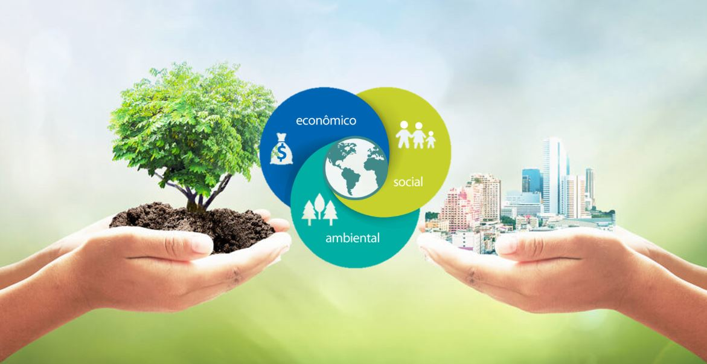

Sostenibilidad
La biodiversidad puede ser una fuente importante de innovación para países en desarrollo en diversas industrias como la farmacéutica y cosmética. Asimismo, indica que la restauración y protección del ambiente promueven la creación de negocios sostenibles rentables. Por otro lado, la destrucción de los ecosistemas de los países representa una amenaza para las condiciones de vida de las personas, lo cual podría traducirse en costos de vida adicionales.

La sostenibilidad ambiental se relaciona con la competitividad tanto a nivel país como a nivel empresarial. Por lo que es importante que el gobierno desarrolle políticas adecuadas que promuevan la sostenibilidad ambiental en el desarrollo competitivo del país. En el Perú el desarrollo sostenible ha sido una preocupación que ha venido recién con el nuevo siglo, pero, claro, eso no significa que el problema no haya existido desde hace mucho (o siempre). Hasta antes de aquello, pocas eran las acciones que hacía el Estado en pos de la conservación ambiental y social, pues en lugar de solucionar ambas problemáticas, creaba hoyos más profundos, ya sea cometiendo acciones violentas en los lugares de la problemática social o privatizando las energéticas. Sin embargo, el decir que es una preocupación que aparece en el Perú a partir del nuevo siglo no significa que ahora se estén tomando las medidas justas. El contexto económico en el que vive nuestro país hace difícil el adoptar medidas que se ajusten a llevar un desarrollo sostenible adecuado.